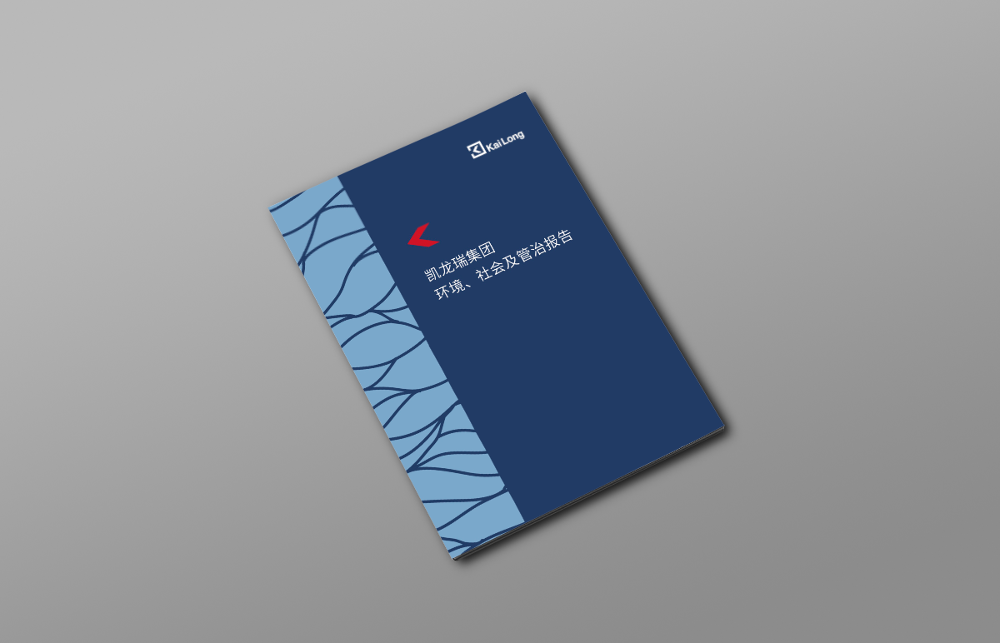

企业的发展与企业身处的社区和环境息息相关，对于凯龙瑞而言，尤为如此。 在全球可持续发展的浪潮下，股东和投资者、政府、合作伙伴、员工、社区 等各个利益相关方越来越关注我们在企业管治、经济促进、环境保护、社会 融合等方面的责任表现，并对我们提出了更高的期待。由此，我们对凯龙瑞 近年来的可持续发展管理与实践进行了回顾和梳理，并希望通过更公开的方式 拥抱责任、做出承诺，促进企业和社会、环境共同的可持续发展。这是我们发 布首份《环境、社会和管治报告》的初衷，也是推动我们不断前行的动力。
我们相信，在投资和运营过程中纳入环境、社会和管治考量，不仅将使凯龙 瑞成为一个更负责任、更环境和社会友好型的基金资产管理者，也将使我们 收获更多的回报。因此，我们始终将责任融入核心业务及日常运营，在项目 投资前的尽职调查、投资后的运营管理，以及项目退出时，均考虑可能产生 的经济、环境、社会影响和风险，尽力提升积极影响。同时，将履行企业社 会责任、促进公益事业作为企业使命的重要内容。
下载：
凯龙瑞集团环境、社会及管治报告 2018. All right reserved. Legal Disclaimer ICP:08102606-2